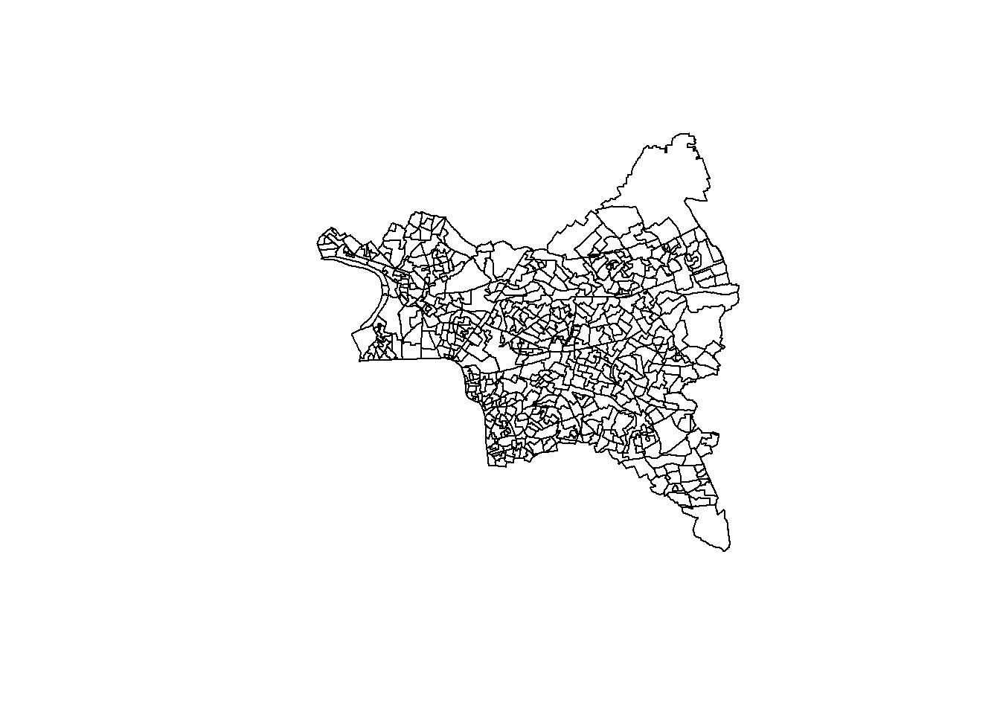

library(sf)
library(dplyr)iris <- st_read("data/iris.shp")## Reading layer `iris' from data source
## `C:\Users\fchri\OneDrive\Bureau\One Drive de Lylia Christory\OneDrive\Documents\projet-geomatique\data\iris.shp'
## using driver `ESRI Shapefile'
## Simple feature collection with 614 features and 30 fields
## Geometry type: MULTIPOLYGON
## Dimension: XY
## Bounding box: xmin: 2.28833 ymin: 48.80725 xmax: 2.603314 ymax: 49.01233
## Geodetic CRS: WGS 84print(iris)## Simple feature collection with 614 features and 30 fields
## Geometry type: MULTIPOLYGON
## Dimension: XY
## Bounding box: xmin: 2.28833 ymin: 48.80725 xmax: 2.603314 ymax: 49.01233
## Geodetic CRS: WGS 84
## First 10 features:
## Annee Code_Offici Nom_Officie Code_Offici.1 Nom_Officie.1 Code_Offici.2
## 1 2024 ['11'] ['Île-de-France'] ['93'] ['Seine-Saint-Denis'] ['932']
## 2 2024 ['11'] ['Île-de-France'] ['93'] ['Seine-Saint-Denis'] ['931']
## 3 2024 ['11'] ['Île-de-France'] ['93'] ['Seine-Saint-Denis'] ['931']
## 4 2024 ['11'] ['Île-de-France'] ['93'] ['Seine-Saint-Denis'] ['932']
## 5 2024 ['11'] ['Île-de-France'] ['93'] ['Seine-Saint-Denis'] ['932']
## 6 2024 ['11'] ['Île-de-France'] ['93'] ['Seine-Saint-Denis'] ['932']
## 7 2024 ['11'] ['Île-de-France'] ['93'] ['Seine-Saint-Denis'] ['932']
## 8 2024 ['11'] ['Île-de-France'] ['93'] ['Seine-Saint-Denis'] ['932']
## 9 2024 ['11'] ['Île-de-France'] ['93'] ['Seine-Saint-Denis'] ['932']
## 10 2024 ['11'] ['Île-de-France'] ['93'] ['Seine-Saint-Denis'] ['931']
## Nom_Officie.2 Code_Offici.3 Nom_Officie.3 Code_Offici.4 Nom_Officie.4 Code_Offici.5
## 1 ['Le Raincy'] ['1112'] ['Roissy'] ['75056'] ['Paris'] ['200054781']
## 2 ['Bobigny'] ['1109'] ['Paris'] ['75056'] ['Paris'] ['200054781']
## 3 ['Bobigny'] ['1109'] ['Paris'] ['75056'] ['Paris'] ['200054781']
## 4 ['Le Raincy'] ['1112'] ['Roissy'] ['75056'] ['Paris'] ['200054781']
## 5 ['Le Raincy'] ['1109'] ['Paris'] ['75056'] ['Paris'] ['200054781']
## 6 ['Le Raincy'] ['1112'] ['Roissy'] ['75056'] ['Paris'] ['200054781']
## 7 ['Le Raincy'] ['1112'] ['Roissy'] ['75056'] ['Paris'] ['200054781']
## 8 ['Le Raincy'] ['1112'] ['Roissy'] ['75056'] ['Paris'] ['200054781']
## 9 ['Le Raincy'] ['1112'] ['Roissy'] ['75056'] ['Paris'] ['200054781']
## 10 ['Bobigny'] ['1109'] ['Paris'] ['75056'] ['Paris'] ['200054781']
## Nom_Officie.5 Code_Offici.6 Nom_Officie.6 Code_Offici.7
## 1 ['Métropole du Grand Paris'] ['200058097'] ["Paris Terres d'Envol"] ['93073']
## 2 ['Métropole du Grand Paris'] ['200057875'] ['Est Ensemble'] ['93008']
## 3 ['Métropole du Grand Paris'] ['200057875'] ['Est Ensemble'] ['93053']
## 4 ['Métropole du Grand Paris'] ['200058097'] ["Paris Terres d'Envol"] ['93073']
## 5 ['Métropole du Grand Paris'] ['200058790'] ['Grand Paris - Grand Est'] ['93057']
## 6 ['Métropole du Grand Paris'] ['200058097'] ["Paris Terres d'Envol"] ['93005']
## 7 ['Métropole du Grand Paris'] ['200058097'] ["Paris Terres d'Envol"] ['93029']
## 8 ['Métropole du Grand Paris'] ['200058097'] ["Paris Terres d'Envol"] ['93071']
## 9 ['Métropole du Grand Paris'] ['200058097'] ["Paris Terres d'Envol"] ['93005']
## 10 ['Métropole du Grand Paris'] ['200057875'] ['Est Ensemble'] ['93010']
## Nom_Officie.7 Code_Offici.8 Nom_Officie.8 Code_Offici.9
## 1 ['Tremblay-en-France'] ['93073'] ['Tremblay-en-France'] ['930730502']
## 2 ['Bobigny'] ['93008'] ['Bobigny'] ['930080101']
## 3 ['Noisy-le-Sec'] ['93053'] ['Noisy-le-Sec'] ['930530104']
## 4 ['Tremblay-en-France'] ['93073'] ['Tremblay-en-France'] ['930730403']
## 5 ['Les Pavillons-sous-Bois'] ['93057'] ['Les Pavillons-sous-Bois'] ['930570109']
## 6 ['Aulnay-sous-Bois'] ['93005'] ['Aulnay-sous-Bois'] ['930050202']
## 7 ['Drancy'] ['93029'] ['Drancy'] ['930290801']
## 8 ['Sevran'] ['93071'] ['Sevran'] ['930710119']
## 9 ['Aulnay-sous-Bois'] ['93005'] ['Aulnay-sous-Bois'] ['930050804']
## 10 ['Bondy'] ['93010'] ['Bondy'] ['930100104']
## Nom_Officie.9 Nom_Officie.10 Nom_Officie.11 Code_Iso_31
## 1 ['Bois Saint-Denis 2'] BOIS SAINT-DENIS 2 bois saint-denis 2 FXX
## 2 ['Les Vignes 1'] LES VIGNES 1 les vignes 1 FXX
## 3 ['Centre Ville Gare 1'] CENTRE VILLE GARE 1 centre ville gare 1 FXX
## 4 ['Centre Ville 3'] CENTRE VILLE 3 centre ville 3 FXX
## 5 ['Victor Hugo'] VICTOR HUGO victor hugo FXX
## 6 ['Nord 2'] NORD 2 nord 2 FXX
## 7 ["L'Avenir Parisien 1"] L'AVENIR PARISIEN 1 l'avenir parisien 1 FXX
## 8 ['Freinville'] FREINVILLE freinville FXX
## 9 ['Ambourget 4'] AMBOURGET 4 ambourget 4 FXX
## 10 ['Suzanne Buisson'] SUZANNE BUISSON suzanne buisson FXX
## Type Code_Grand_ Libelle_Gra Fait_Partie Code_Offici.10
## 1 iris d'habitat 9307305 Bois Saint-Denis Non <NA>
## 2 iris d'habitat 9300801 Bobigny Non <NA>
## 3 iris d'habitat 9305301 Noisy-le-Sec Non <NA>
## 4 iris d'habitat 9307304 Centre Ville Non <NA>
## 5 iris d'habitat 9305701 Pavillons-sous-Bois Non <NA>
## 6 iris d'habitat 9300502 Nord Non <NA>
## 7 iris d'habitat 9302908 L'Avenir Parisien Non <NA>
## 8 iris d'habitat 9307101 Sevran Non <NA>
## 9 iris d'habitat 9300508 Ambourget Non <NA>
## 10 iris d'habitat 9301001 La Noue Caille Non <NA>
## Nom_Officie.12 geometry
## 1 <NA> MULTIPOLYGON (((2.568662 48...
## 2 <NA> MULTIPOLYGON (((2.410129 48...
## 3 <NA> MULTIPOLYGON (((2.460552 48...
## 4 <NA> MULTIPOLYGON (((2.566451 48...
## 5 <NA> MULTIPOLYGON (((2.51227 48....
## 6 <NA> MULTIPOLYGON (((2.486115 48...
## 7 <NA> MULTIPOLYGON (((2.419661 48...
## 8 <NA> MULTIPOLYGON (((2.51108 48....
## 9 <NA> MULTIPOLYGON (((2.504991 48...
## 10 <NA> MULTIPOLYGON (((2.478301 48...plot(st_geometry(iris))
Dans le cadre de notre analyse des inégalités socio-spatiales à Saint Denis, nous avons mobilisé plusieurs types de données :
Contours des IRIS (IGN) :
Il s’agit de données spatiales vectorielles (format shapefile .shp ou GeoPackage .gpkg) fournies par l’IGN. Ces données représentent les limites des IRIS (Îlots Regroupés pour l’Information Statistique), qui sont des unités spatiales infra-communales. Chaque IRIS correspond à une zone d’environ 2 000 habitants, ce qui permet une analyse fine des phénomènes sociaux à l’intérieur d’une commune. Ces contours servent de support cartographique pour représenter les indicateurs socio-économiques.
Base Filosofi (INSEE) :
Il s’agit de données statistiques attributaires (format .csv ou .xlsx) produites par l’INSEE. Ces données permettent de mesurer précisément les inégalités socio-économiques entre les différents quartiers. Cette base fournit des informations détaillées sur les revenus des ménages à l’échelle des IRIS, telles que : - le revenu médian - le taux de pauvreté - l’indice de Gini (inégalités de revenus)
Traitement des données avec RStudio :
Les données ont été traitées à l’aide de R, en utilisant des formats comme shp, csv et xlsx. Cet outil permet ainsi de croiser les données spatiales et statistiques afin de visualiser et analyser les inégalités de revenus dans l’espace.
Le traitement consiste à :